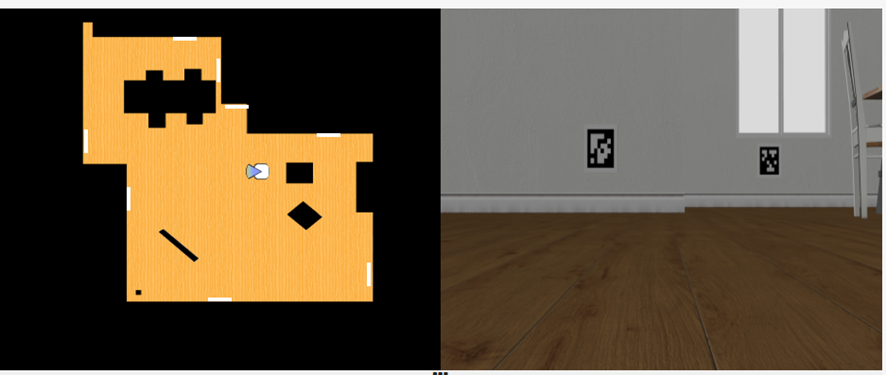
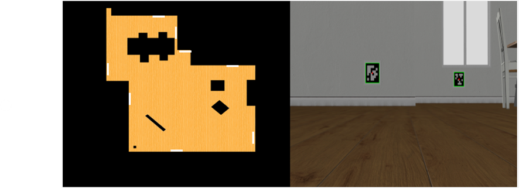
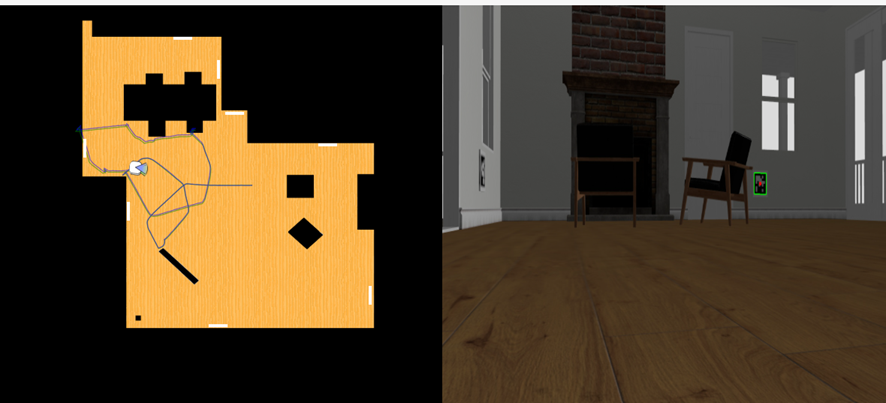

🧭 Entry 1: AprilTag Detection and Pose Estimation
🚀 Starting the Exercise
To begin this exercise, I simply displayed the camera capture from the robot to get an initial sense of the setup. When execution starts, the map shows the robot's current position. The front of the robot (where the camera is pointing) is indicated by a small blue triangle, as seen below.
Additionally, the captured image is shown. In this case, two AprilTags are visible — one closer than the other:
🔍 AprilTag Detection
Next, following the exercise guide, I added a function to detect AprilTags in the image using the pyapriltags library,
specifying the “tag36h11” family as indicated.
The detector returns a list of detected tags in the image, each with the following information:
- tag_family: The tag family ("tag36h11")
- tag_id: The unique ID of the tag within the family
- tag_size: Real-world size of the tag (None, unless specified)
- hamming: Number of differing bits (should be zero)
- decision_margin: Confidence value of the detection
- homography: 3×3 matrix from tag frame to image
- center: Center of the tag in pixel coordinates
- corners: List of four corners in pixel coordinates (top-left, top-right, bottom-right, bottom-left)
- pose_R: 3×3 rotation matrix
- pose_t: 3×1 translation vector (position relative to the camera)
- pose_err: Associated error in pose estimation
By drawing the lines between the corners and highlighting the tag center, the result is visualized as follows:
🧭 Tag Detection at Various Angles
The initial image is taken with the camera directly facing the tags, but I wanted to test how well the system performs under different conditions.
By navigating randomly through the area, I found that AprilTags are successfully detected even when they are not perfectly frontal. Below are two examples:
In the next image, two tags appear: one far away that is detected successfully, and one on the side, which is barely visible and not detected:
Additionally, when a tag is partially occluded (about halfway out of view), detection fails. This can be seen in the video below, where the tag is detected until it leaves the right edge of the frame:
📍 Getting the Tag's Coordinates
Before estimating the robot’s pose relative to the tag, I visualized the available 3D coordinates of the tag's center along with its 2D image position. Using the provided YAML data and the detected tag IDs, I retrieved their 3D coordinates in the simulated world.
I created a helper function to visualize both 2D and 3D coordinates for debugging:

The 3D coordinates refer to the center of the tag in the simulated environment, while the 2D coordinates are from the image.
These values will be useful later when transforming the robot’s pose to world coordinates using solvePnP.
📐 SolvePnP
Moving forward, the next step is to estimate the robot’s pose relative to the tag’s coordinate system using solvePnP.
Since the reference frame is centered on the tag, its center is defined as (0, 0), and the corners are calculated based on the tag size provided (0.3 × 0.3 m total, 0.24 × 0.24 m black region).
Using the detected corner positions, the camera matrix (as described in the instructions), and the known tag size,
I applied solvePnP, which returns:
- tvec: Camera position relative to the tag
- rvec: Rotation vector (Rodrigues format) relative to the tag
In the following video, you can see the pose estimation functioning properly whenever a tag is detected. There are small variations when the robot moves, but overall the results remain consistent across frames: